In this writing, I want to share how preparing the Contoso sales model for Copilot changed the way I think about semantic model quality. What started as exploring a new button in Power BI Desktop turned into a realization: the quality of Copilot's answers is a direct reflection of the quality of the semantic model behind them.
My journey started after reading Microsoft's post Semantic Layers: The Foundation of Enterprise AI. The phrase that caught my attention was this: Power BI "doesn't just visualize data; it standardizes meaning." That framing hit differently. A model that returns correct numbers in reports was no longer the full picture. For AI to work well, the model also needs to explain itself.
1. The Starting Point: A Model That Works but Doesn't Explain Itself
The Contoso sales model I was working with is a clean star schema. Four fact relationships: sales to date, product, customer, and store. Measures in a dedicated table. User-defined functions for time intelligence. By any standard metric, a well-built model.
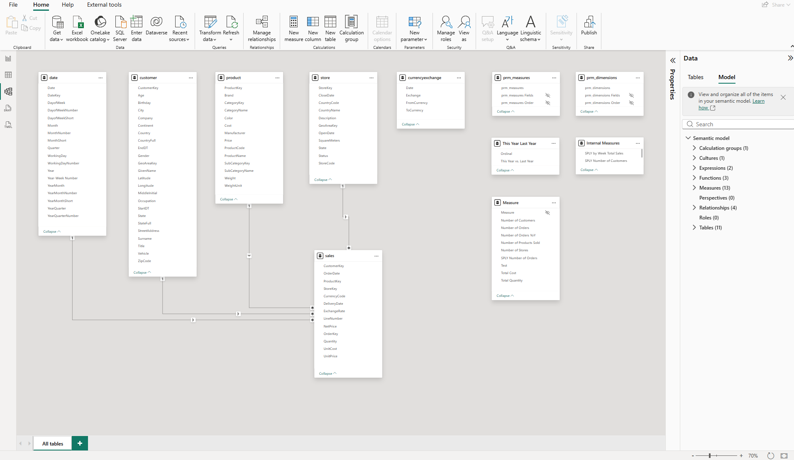
But looking at the Data pane, I noticed something. The customer table alone has more than 20 columns: Age, Birthday, City, Company, Continent, Country, CountryFull, CustomerKey, EndDT, GeoAreaKey, GivenName, Latitude, Longitude, MiddleInitial, Occupation, StartDT, State, StateFull, StreetAddress, Surname, Title, Vehicle, ZipCode. Many are useful for report filtering. None of them carry any description, synonym, or priority signal for an AI system trying to answer business questions.
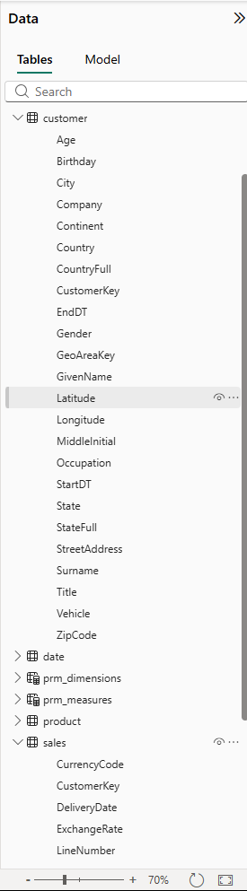
The model worked perfectly for reports. For Copilot, it was an undifferentiated wall of metadata with no signal about what mattered for analytics.
2. Discovering “Prep Data for AI”
Power BI Desktop added a "Prep data for AI" button to the Home ribbon, introduced as a preview in the May 2025 update and later extended to the Power BI Service in October 2025. I found it next to the Copilot button.
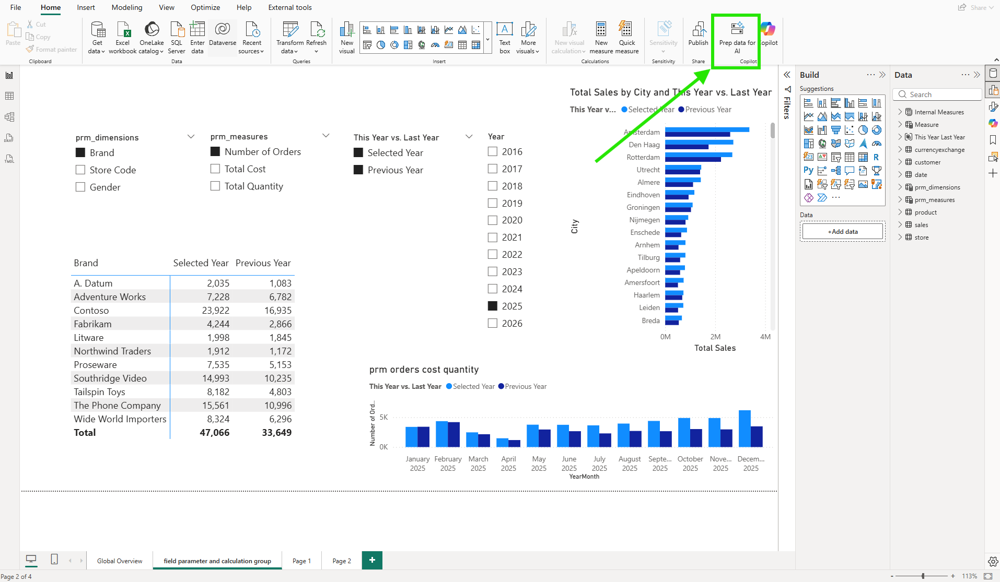
Clicking it opens a dialog grouped under "Prep this model to be AI-ready" with three capabilities, each serving a different purpose. According to Microsoft's documentation, these features are designed to reduce Copilot ambiguity, improve relevance and accuracy, and make interactions more fluent.
"Simplify the data schema" lets you create a focused AI data schema by deselecting columns Copilot doesn't need for analytics. "Verified answers" lets you pin specific visuals to specific question phrases so Copilot always returns the same visual for that question. "Add AI instructions" gives Copilot written business context about the model. All three updates save to the semantic model, not the report.
3. Simplifying the Data Schema
The "Simplify the data schema" tab works through a checklist of the model's tables and columns. For each, I can choose whether to include it in the dedicated AI data schema that Copilot uses when answering questions.
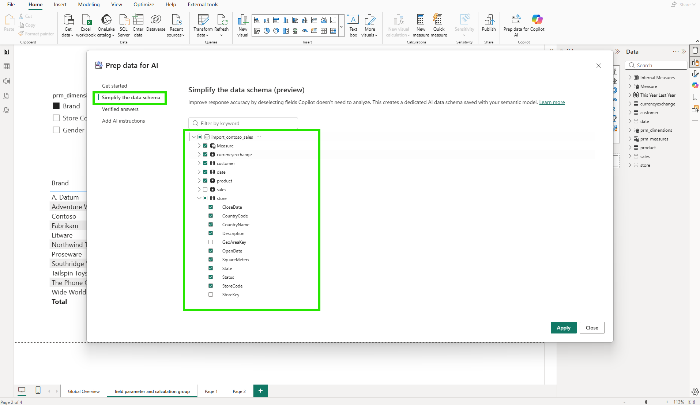
My first instinct was to include everything. But the intent is the opposite: deselect columns that Copilot doesn't need for business analysis. For the store table, that meant unchecking CountryCode, GeoAreaKey, and StoreKey: three operational or internal key columns that Copilot does not need for business analytics. The dialog displays all columns, including any that are already hidden from report users in the data model, with those pre-excluded by default. Deselecting a column here is a separate decision from model visibility: it controls only what Copilot sees.
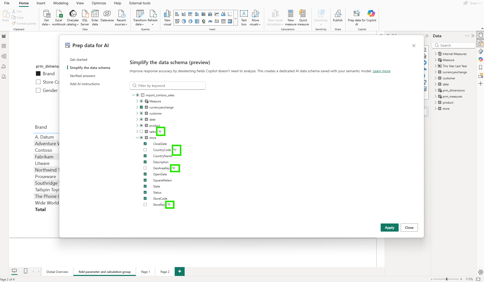
In the model diagram, those changes are visible as highlighted columns across the affected tables.
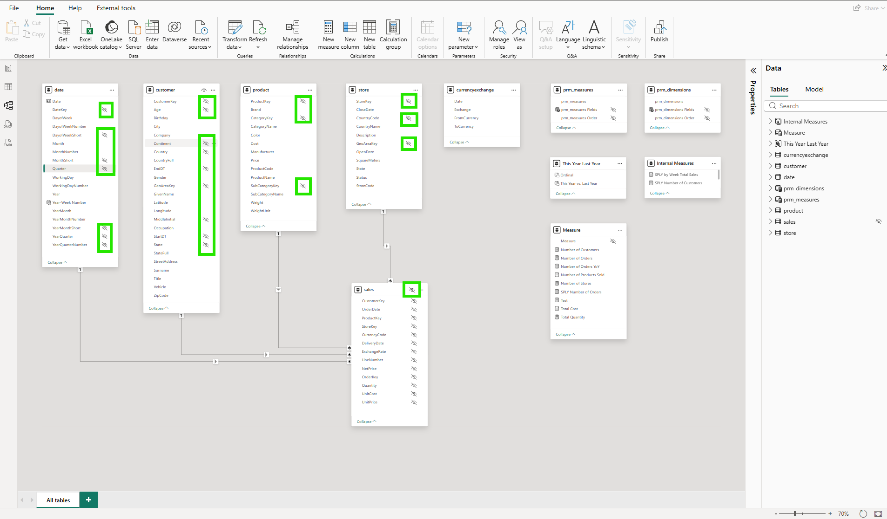
Here is the first aha moment: there are two independent visibility controls. The data model already has its own column visibility settings. Key columns like StoreKey and GeoAreaKey are typically hidden from report users at the model level. The first time the AI schema is set up, those hidden columns are automatically excluded by default. On subsequent edits, the dialog shows all columns in their last saved state, and the developer retains full control over which columns, hidden or visible, Copilot can access. For columns that are visible to report users, deselecting them from the AI schema does not remove them from the report field list either. The AI data schema is saved within the semantic model as a dedicated layer for Copilot only. Model visibility and AI visibility operate completely independently.
4. Adding AI Instructions
The third feature is where things got more substantive. The AI instructions editor is a free-text field where I can give Copilot direct business context about the model.
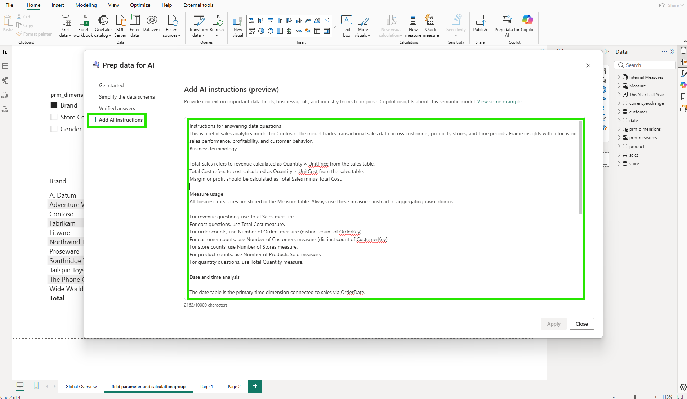
I structured my instructions in four parts. The first explained the model's purpose: a retail sales analytics model for Contoso, tracking transactional sales data across customers, products, stores, and time periods, with a focus on sales performance, profitability, and customer behavior. The second defined key business terms: Total Sales is Quantity times UnitPrice from the sales table; Total Cost is Quantity times UnitCost; Margin is Total Sales minus Total Cost. The third section covered measure usage: all business measures live in the Measure table, and Copilot should use those measures rather than aggregating raw columns. For revenue questions, use Total Sales. For order counts, use Number of Orders (distinct count of OrderKey). For customer counts, use Number of Customers (distinct count of CustomerKey). The fourth section addressed the date model: the date table is the primary time dimension, connected to sales via OrderDate.
According to the AI instructions documentation, these instructions allow model authors to provide context, business logic, and specific guidance so Copilot can better interpret user questions using organizational terminology and analytical priorities. The instructions save to the semantic model, so they apply consistently across every report built on top of it.
5. The Moment It Broke: When Copilot Got the Answer Wrong
With the schema simplified and instructions written, I published to the service and opened Copilot.
Simple questions worked well. "Which brand has the most orders?" returned a clean table showing Contoso with the highest order count and the correct measures applied.
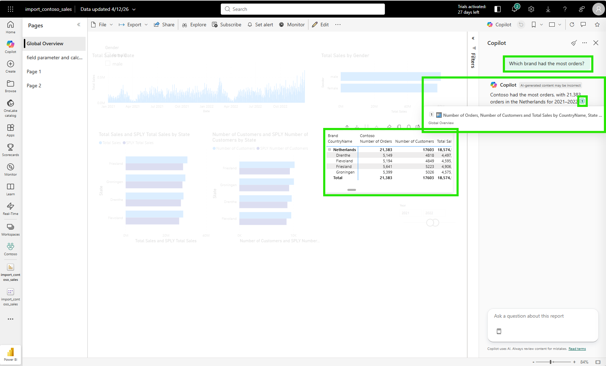
Then I asked something more analytical: "Which year's sales shows the biggest difference compared to the previous year's sales?"
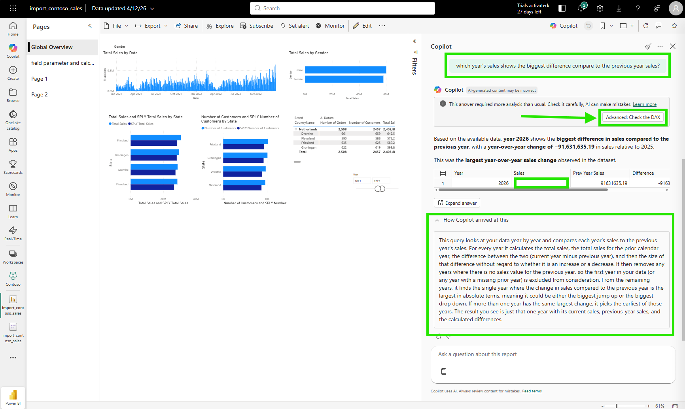
Copilot returned 2026 as the answer. It said 2026 had the biggest year-over-year change, with a sales difference of minus 91,631,635.19 compared to 2025.
The answer is wrong. 2026 is the current year and has no sales data yet. It exists in the date table but has no sales transactions. The DAX query treats it as a valid year and compares its blank sales against the full 2025 total, producing an artificially large negative difference. The real year with the most significant swing is somewhere in the complete history, where both the current and prior year have full data on both sides.
But Copilot had no way of knowing that. I clicked "How Copilot arrived at this" (HCAAT), a transparency panel Copilot shows below its answer to explain the reasoning and DAX it used, to examine what happened. The explanation was transparent: find every year's total sales, calculate the absolute difference against the prior year, return the year with the largest absolute change. That is a valid interpretation of my question. The DAX query Copilot generated to answer it was also technically sound.
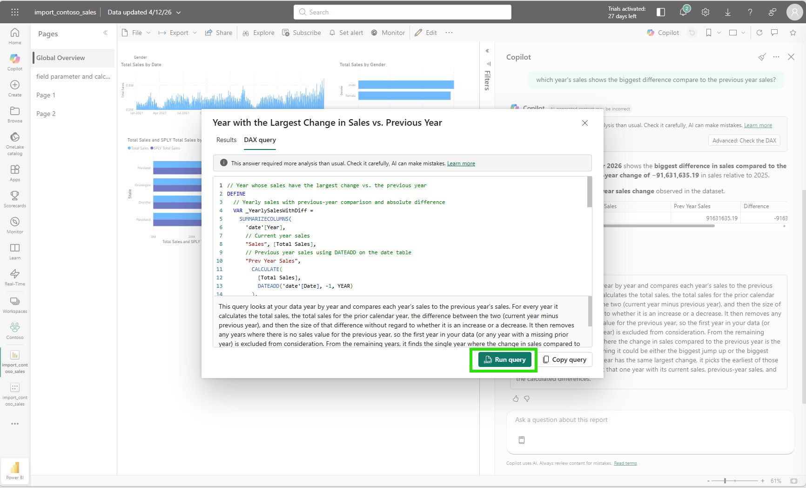
// Year with the largest change in total sales vs. the previous year
DEFINE
VAR _YearlySales =
SUMMARIZECOLUMNS(
'date'[Year],
"Year Total Sales", [Total Sales],
"Prev Year Total Sales",
CALCULATE([Total Sales], DATEADD('date'[Date], -1, YEAR)),
"Sales Difference",
[Total Sales] - CALCULATE([Total Sales], DATEADD('date'[Date], -1, YEAR)),
"Abs Sales Difference",
ABS([Total Sales] - CALCULATE([Total Sales], DATEADD('date'[Date], -1, YEAR)))
)
VAR _TopYear = TOPN(1, _YearlySales, [Abs Sales Difference], DESC)
EVALUATE
SELECTCOLUMNS(
_TopYear,
"Year", 'date'[Year],
"Total Sales", [Year Total Sales],
"Previous Year Total Sales", [Prev Year Total Sales],
"Sales Difference", [Sales Difference],
"Absolute Sales Difference", [Abs Sales Difference]
)
ORDER BY [Year] ASCRunning the query in the DAX query view confirmed the result: year 2026, blank for current year sales, the full 2025 total as prior year, and a massive absolute difference.
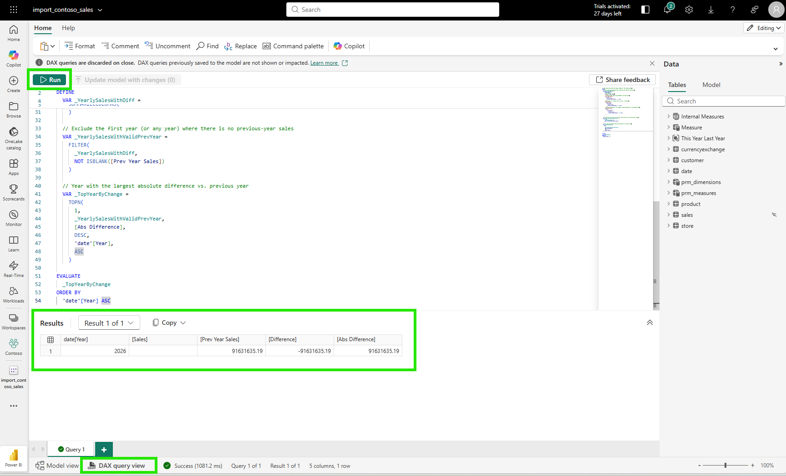
The DAX was correct. The arithmetic was correct. The business context was missing.
Here is the second aha moment: the gap wasn't in Copilot's reasoning ability. Without any guidance, Copilot treats all years as equally valid for year-over-year comparison. A year with no sales data is evaluated by the same logic as any year with a full twelve months of data. The gap was in my AI instructions. I had explained what the measures mean and how to use them, but I had not told Copilot that the current year may have no sales data yet. An instruction like "The current year may have incomplete data; when comparing year-over-year performance, exclude years where Total Sales is blank or where the year equals the current calendar year" would have steered the answer away from this result. That kind of instruction doesn't change the DAX engine. It changes the framing that guides which DAX gets written, and that framing lives in the semantic model. AI quality is a semantic model responsibility, not just an AI capability problem.
6. What This Looks Like in TMDL
From a DevOps standpoint, this is foundational.
When I looked at the TMDL script view in Desktop, everything I configured through the "Prep data for AI" dialog had been captured in the model's metadata as code. The linguisticMetadata JSON, the AI instructions, the schema simplifications: all of it is stored in the semantic model definition and surfaces through TMDL.
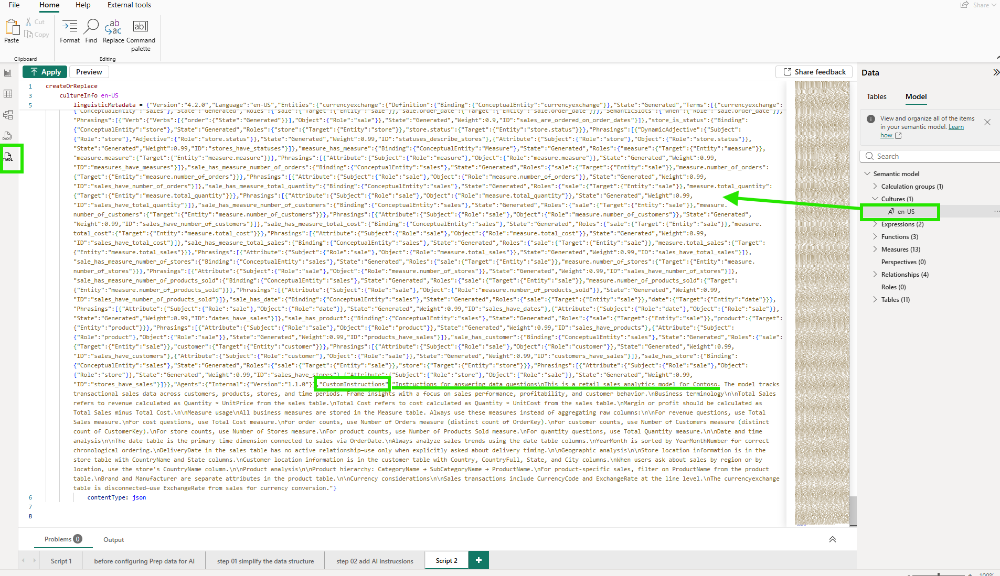
Opening definition/model.tmdl in VS Code reveals something interesting. On line 14, there is an annotation called PBI_ProTooling. It is a list that Power BI maintains automatically, recording which tools have ever interacted with this model. After going through the "Prep data for AI" workflow, CopilotTooling appeared in that list. The Git blame on that same line shows the exact commit that added it, including the commit message. That traceability comes for free because the model lives in plain text.
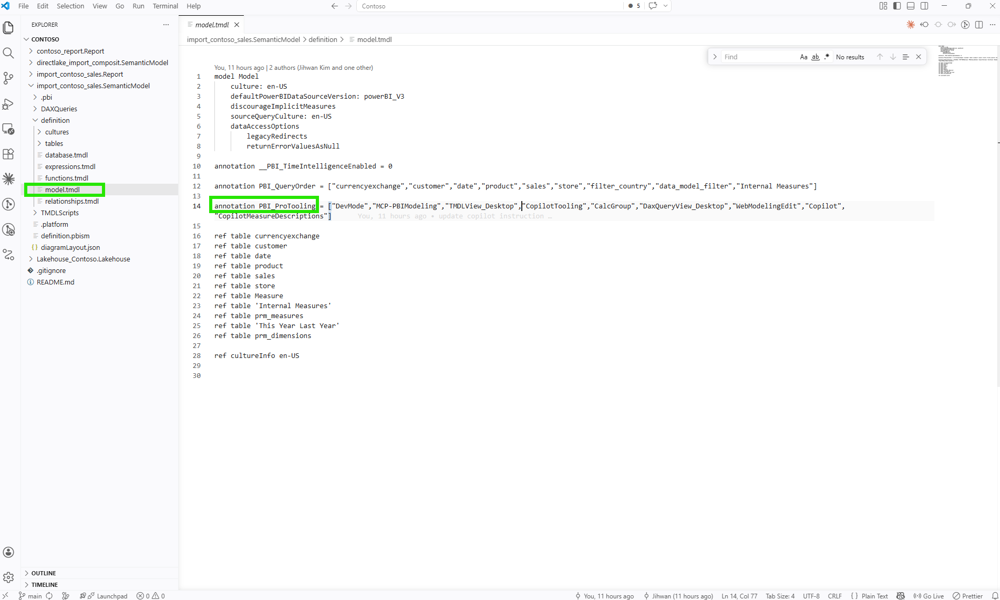
Version Control
When I add or change an AI instruction, that change shows up as a text diff in Git. A commit message like "feat: add instruction to exclude years with missing sales data from YoY comparison" describes the intent precisely. If the instruction causes unexpected Copilot behavior in a later release, I can trace it back to a specific commit, understand why it was written, and revert or refine it. That traceability doesn't exist when AI preparation lives only in a UI setting with no source representation.
Code Review
In a pull request, a reviewer can read the AI instructions directly and challenge them on their merits. "This instruction says to always use the Measure table, but it doesn't address calculated columns in the sales table used for currency conversion" is a reviewable comment. That kind of review is only possible when instructions are text in a diff. A configuration made through a dialog is invisible to anyone working in a Git workflow.
Deployment
According to Microsoft's documentation on Prep data for AI considerations, after deploying LSDL (Linguistic Schema Definition Language, the file format that stores AI instructions, AI data schema, and Q&A synonyms) changes through Git or deployment pipelines, you need to refresh the model in the service to sync the AI preparation changes. This means AI instructions travel through the same deployment pipeline as the rest of the model. They are not a separate manual configuration step. They are part of the model artifact.
7. The Final Step: Approved for Copilot in the Service
After preparing the model in Desktop and publishing to the service, there is one more step on the service side.
In the Fabric workspace, I right-clicked the semantic model and opened Settings.
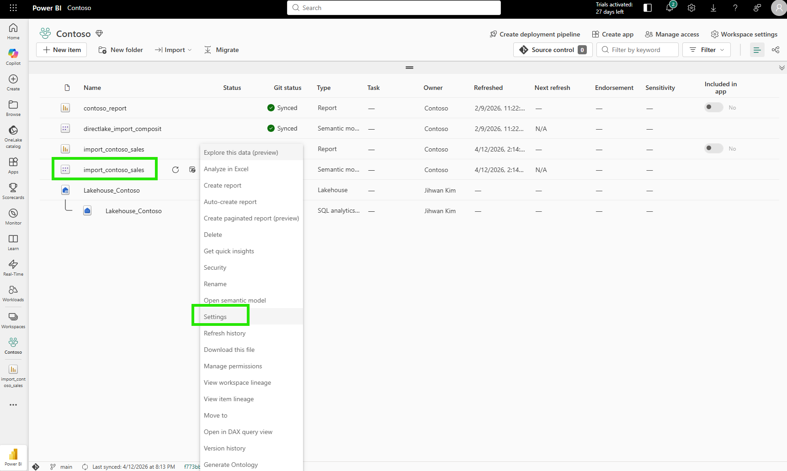
The "Approved for Copilot" section in the settings page has a single checkbox. Checking it and clicking Apply tells the service that this model has been intentionally prepared for AI use.
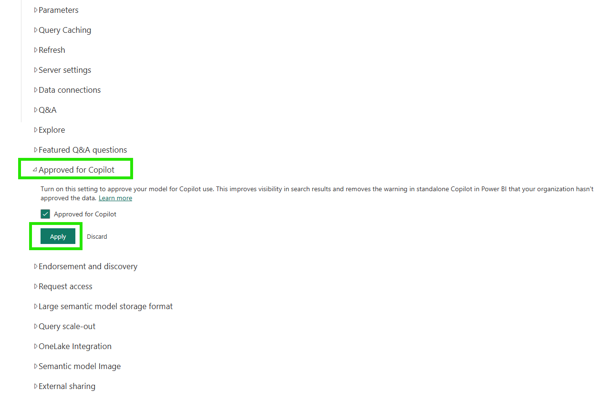
Marking a model as approved improves its visibility in search results and removes friction warnings for end users in the standalone Copilot experience. According to the documentation, reports that use an approved semantic model are also considered approved, so the governance signal flows from the semantic model down to every report built on top of it.
The "Prep data for AI" experience is also available directly from the semantic model's ribbon in the service, so teams can configure and refine AI preparation in the browser without Desktop.
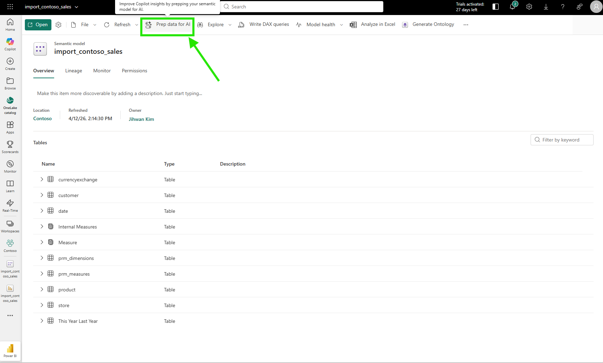
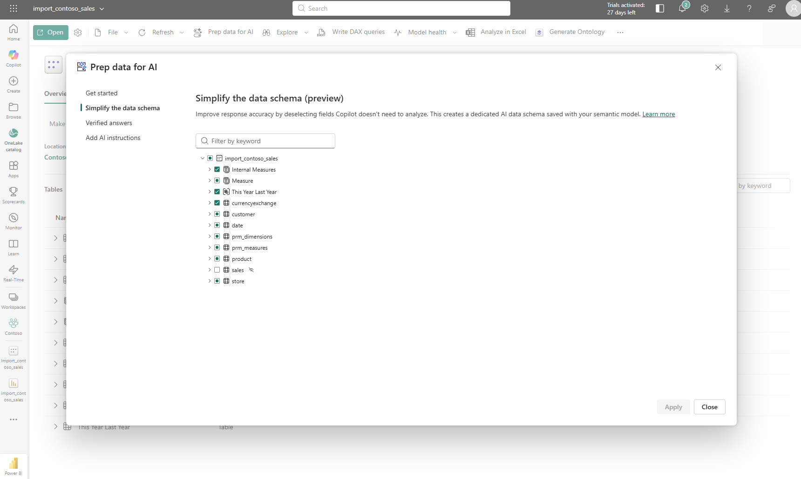
The service experience mirrors the Desktop experience. Same three features, same save behavior, same result: the AI preparation is stored on the semantic model and deployed alongside everything else.
Closing Thoughts
This experience left me with a new mental model: AI readiness is not a feature you enable; it is a quality standard you build into the semantic model itself.
The Copilot failure on the year-over-year question was not a Copilot problem. The DAX was valid, the reasoning was transparent, and the "How Copilot arrived at this" explanation was genuinely useful for diagnosing what happened. The problem was a semantic model that had no business context about incomplete data. No amount of AI capability can compensate for context that was never provided.
Semantic models have always been where business meaning lives: measures, relationships, hierarchies, formatting rules. Now they are also where AI context lives: instructions, schema simplifications, verified answers. The model is becoming the contract between the business and every AI system that reads it. The better that contract is written, the better every AI experience built on top of it will be.
I hope this helps having fun in exploring how to prepare your semantic models for AI and embracing this new era of AI-powered analytics!